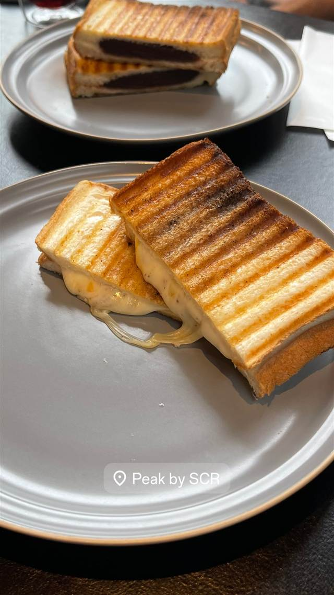

パン · サンドイッチ · ロウアーイーストサイド
Katz's Delicatessen
1888年創業のNY最古のデリ、映画の舞台になったパストラミサンド
KATZ'S DELICATESSEN
1888年創業、現存するニューヨーク最古のデリカテッセン。1910年に「カッツ・デリカテッセン」となって以来、パストラミサンドイッチの名店として愛され続け、映画『恋人たちの予感』の名場面の舞台としても知られる。
TRIVIA
へえ、という話
- 第二次大戦中、店主一族の息子たちが従軍した際に生まれた「息子にサラミを送ろう（Send A Salami To Your Boy In The Army）」が店の名物スローガンになった
- 映画『恋人たちの予感』でメグ・ライアンが演技をした場面の撮影地で、その席には「Where Harry met Sally... Hope you have what she had!」の看板が今も掲げられている
REVIEWS
みんなの声
「パストラミの満足感と行列の長さ」に注目
- 山盛りのパストラミサンドの食べ応えと満足感を高く評価する声が多い
- 値段の高さやスタッフのそっけない接客への不満を挙げる声も複数ある
- 行列は長いが意外と早く進むので思ったより待ちやすいという声もある
Tripadvisor
| 創業 | 1888年創業（現ニューヨーク最古のデリカテッセン） |
|---|---|
| 看板 | パストラミサンドイッチ |
| こだわり | 毎週パストラミ約6800kg、コーンドビーフ約3600kg、サラミ約900kg、ホットドッグ4000本を提供する量とこだわり |
| 予算 | 昼 $47 夜 $47 |
| 場所 | 2nd Ave 205 E Houston St, New York, NY 10002 |
| 注意 | 入店時にチケットを受け取り、注文の都度スタンプを押されて最後に精算する独自のチケット制。カット担当への現金チップが慣習 |
食べたもの：パストラミサンド
NEARBY
近い店・同じ系統の店
-
 カフェ Delancey St
Good Thanks Cafe
オーストラリア出身の兄弟が開いたシドニー風アボカドプレート
カフェ Delancey St
Good Thanks Cafe
オーストラリア出身の兄弟が開いたシドニー風アボカドプレート
-
 カフェ Delancey St
Russ & Daughters Cafe
創業100年、初めて座って食べられるようになったベーグルとサーモン
昼 $20～$40 夜 $20～$40
カフェ Delancey St
Russ & Daughters Cafe
創業100年、初めて座って食べられるようになったベーグルとサーモン
昼 $20～$40 夜 $20～$40
-

サンドイッチ 上野毛 Peak by SCR -
 サンドイッチ 麻布十番
Tokyo American Club（東京アメリカンクラブ）
排日移民法きっかけに設立の会員制クラブのラップサンド
昼 ¥3,000～¥3,999 夜 ¥3,000～¥3,999
サンドイッチ 麻布十番
Tokyo American Club（東京アメリカンクラブ）
排日移民法きっかけに設立の会員制クラブのラップサンド
昼 ¥3,000～¥3,999 夜 ¥3,000～¥3,999
-
 サンドイッチ 広尾駅
ホームワークス 広尾店（Homework's）
日本初のグルメバーガー店、100%ビーフの自家配合パティ
昼 ¥1,000～¥1,999
サンドイッチ 広尾駅
ホームワークス 広尾店（Homework's）
日本初のグルメバーガー店、100%ビーフの自家配合パティ
昼 ¥1,000～¥1,999
-
 サンドイッチ 吉祥寺駅
エイヒレ（吉祥寺ハモニカ横丁）
ハモニカ横丁の立ち飲みで、店名由来の炙りエイヒレを味わう
夜 ¥2,000～¥2,999
サンドイッチ 吉祥寺駅
エイヒレ（吉祥寺ハモニカ横丁）
ハモニカ横丁の立ち飲みで、店名由来の炙りエイヒレを味わう
夜 ¥2,000～¥2,999